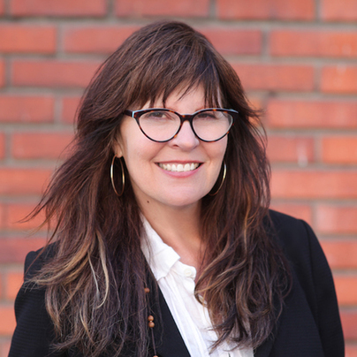

Elder Writing Online
About the Project
About the Project
Kevin Dublin, Program Director & Teaching Artist, Kevin Dublin is editor of Etched Press and a writer of poetry, prose, scripts, and code. His words have recently appeared in Cincinnati Review, North Carolina Literary Review, The Racket, and he is author of the chapbook How to Fall in Love in San Diego. Kevin holds an MFA from San Diego State and enjoys teaching emerging writers in the community, making video adaptations of poetry, and developing web apps for writers.
Antony Fangary, Teaching Artist, is an educator, grant writer, and poet living in San Francisco. His work has recently appeared in or is forthcoming in The Oakland Review, New American Writing, and he is the author of the chapbook Haram. Antony holds an MFA from San Francisco State University and runs the reading series and fundraiser Tenderlovin in the TL.
Michelle Kicherer, Teaching Artist, is an instructor, editor, copywriter, and writing coach who loves to work with both fiction and nonfiction. Her work has appeared in The Berkeley Fiction Review, 580 Split, Into the Void, The Cutaway and many others. Michelle holds an MFA in English & Creative Writing from Mills College and specializes in transforming nonfiction books into scripts for online courses.
Tam Putnam, Assistant Program Director & Accessibility Lead, is a former editor at Elle, Gourmet, and European Travel & Life magazines. Her work has been published in The East Bay Times as well as Sunset and Diablo magazines. She received her MFA in nonfiction writing from University of San Francisco. Tam is an obsessive recycler.
Julie Rogers, Teaching Artist, entered the Bay Area poetry scene during the 1970’s. Decades of involvement in Tibetan Buddhism have influenced her writing, and she is the author of the Buddhist end of life manual, Instructions for the Transitional State as well as the book of poetry, House of the Unexpected and chapbook Life on Earth, among many others. Julie is founder and Director of TLC Transitional Life Care, a Vajrayana Buddhist end of life support and education non-profit.
Denise Sullivan, Teaching Artist, is an author, journalist, and culture worker. She is editor of the San Francisco story anthology, Your Golden Sun Still Shines, the author of five published titles, including Keep on Pushing: Black Power Music From Blues to Hip Hop as well as the S.F. Lives columnist at The San Francisco Examiner, a contributing writer to Downbeat, Down with Tyranny!, and the San Francisco Chronicle. Denise is a fourth-generation San Franciscan and continues to chronicle the literary, musical and political history of her hometown.
In partnership with the Community Living Campaign.
Wednesdays @ 6:00 pm PST via Zoom
In partnership with the Jewish Senior Living Group.
Thursdays @ 10:30 am PST via Zoom

In partnership with the City of Oakland.
Mondays @ 12:00pm PST via Zoom